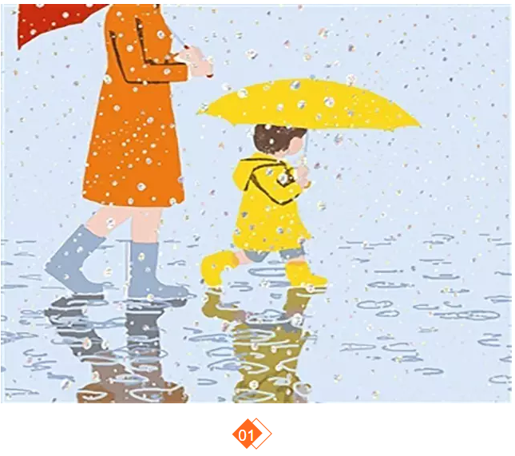
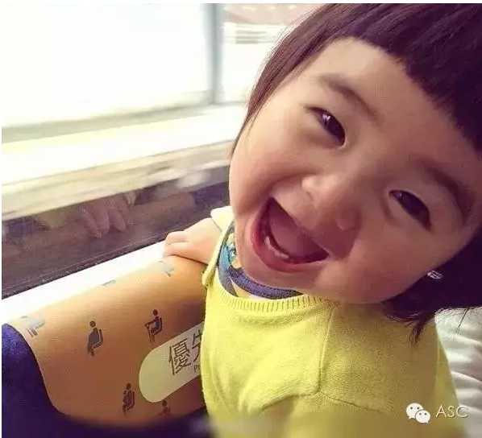

互惠动态
|
|
管孩子要趁早，学英语更要趁早！

张爱玲说，出名要趁早。其实，我觉得出名这事出早了弊大于利，年纪轻轻，有了盛名，难免轻狂跌跟头。
可管孩子这事，还是越早越好。
几天前，有一位当老师的妈妈和我诉说：她的女儿读初中，非常爱美，对打扮特上心，一提学习就满脸不耐烦。
有一次母女俩因为学习成绩吵了起来，她竟然离家出走，后来发动了所有的亲戚朋友才找回来。吓得她再也不敢管了，怕逼急了出事。
我问，孩子从小没和你在一起生活吗？她回复：在一起，就是自己工作忙，下了班要还办辅导班，小时候没怎么管她，大了就成了这样，青春期的孩子，唉！
之前，对“青春期”这个词我也是这么理解，叛逆，不听话，爱和父母唱反调。
可是，我女儿和她女儿差不多大，在她身上，这些特征几乎不具备。
女儿上幼儿园之前，每天早晨我妈妈来看她，等我下了班，妈妈再回家。
那会儿，每次我出门时，女儿看见了都会哭闹。有几个晚上，我和她谈心：宝宝，下次妈妈再上班，你不要哭了，妈妈去给你挣钱买芭比娃娃，你在家乖乖的，妈妈才能安心上班哦。她似懂非懂地点头。
一天早上，女儿在卧室，我骗她说，宝宝，妈妈去客厅看看谁来了。我拿着包在客厅换鞋，准备偷偷出门。女儿从卧室跑出来，扬着小手和我说：妈妈再见，早点回来。我又惊又喜，她竟然懂得我的心。那时，她刚刚一岁半。
十多年，我和女儿从来没有像别的妈妈说的那样，孩子越大越不懂事，也不和妈妈亲了。她每天早晨上学时，我们都要拥抱一下，然后看着彼此的眼睛恋恋不舍地说再见。
女儿上小学，我重走了一遍小学路，把她所有的课本都学习一遍。初中了，我又开始重走初中路，背那些早已忘记的数学公式和定理。做这些，是为了她学习有了偏颇时，好及时给她纠正。
她偶尔也厌倦学习，也有烦恼，也有情绪波动，但从来都没有过叛逆，只要我一个拥抱，她就会收起所有的坏脾气。我们娘俩的心很近，近到从她在我身体里诞育那一刻到现在，就一直贴在一起。
其实，所谓的叛逆，是孩子成长时父母的缺席，爱的缺席，耐心的缺席，纠正的缺席，慈和严不正确的打开方式。
别说把TA丢给老人带，就算跟着父母，你却天天下了班忙着挣外快，忙着打麻将，当发现你们之间出现问题时，再想管都难，一言不合就青春期。
不要说，谁家的孩子人家也没管就怎么怎么优秀，那种孩子毕竟太少，几个当父母的能有幸遇到？
大多孩子不是天才，不是学霸，不是别人家的孩子,很难从小就做到自律。如果,你缺席了TA的成长，TA就会放纵自己，去迷恋游戏，去热衷打扮，去好奇各种新鲜事物，唯独对学习这件事没有兴趣。
从善如登，从恶如崩。而学坏，是最容易的事。
一位教育专家说过：父母在该教育和照顾孩子的时候，千万不要借口工作忙，而忽略对孩子的管理。在年老的时候，一切荣誉和金钱都是过眼云烟，而一个不成器的孩子，足以让你晚景惨淡。
所以，管孩子要趁早。

管孩子要趁早，但学英语更要趁早！
不少语言学家表明，孩子在12岁以前是学英语的最好时期。根据人的语言发展规律，小孩子比大人对声音更敏感。同时，右脑控制发音器官的能力较强，声带、舌唇等运动神经的调节也具有很大的可塑性。需要注意的是，这种与生俱来的能力有一定的“保质期”，随年龄的增长逐渐下降。
而孩子学习外语还有一项好处，那就是可以促进智力的发展。耶鲁大学心理学教授研究得出的结论，语言刺激能促进大脑细胞生长发展，两种刺激能促进大脑两半球之间的协调，加强神经细胞之间的联系。会外语的孩子灵活性和解决问题的能力要胜出只会母语的孩子一筹。
孩子该如何学习英语？
孩子应该在轻松愉快的气氛与环境之中学英语，这才能达到理想的学习效果。比如，必须要克服英语提倡的“Happy Teaching:Smart Learning”学习理念。拒绝海题战术，拒绝过多的语法讲解与词义解释，要通过语言环境的熏陶，让孩子不得不说。
国际互惠生会以家庭成员的身份入住到中国家庭里，在生活中都会用英语进行交流，给孩子一个“不得不”使用外语的环境，随时随地全天候地浸泡于外语的学习环境中。这种学习效果是普通课堂或外教所无法实现的，真正达到让孩子会学会用，更能交流的目的。